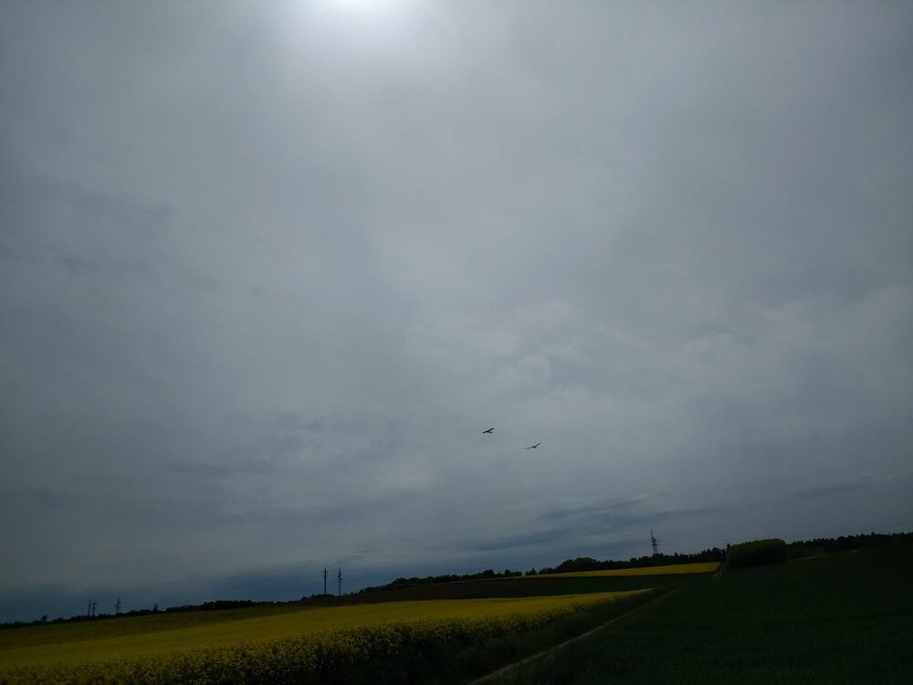
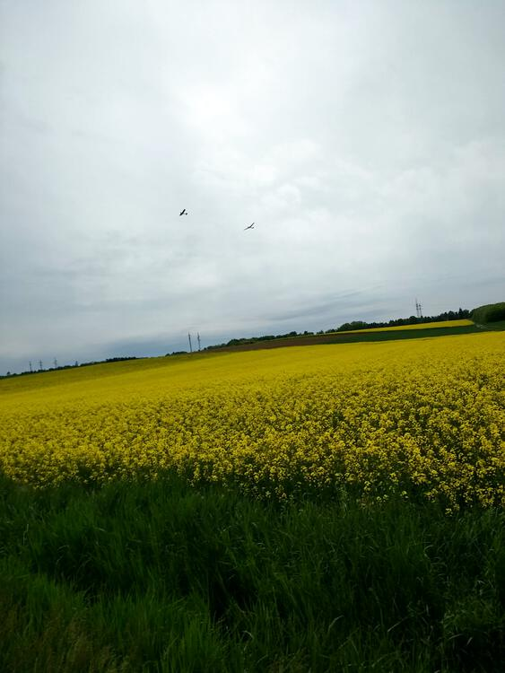
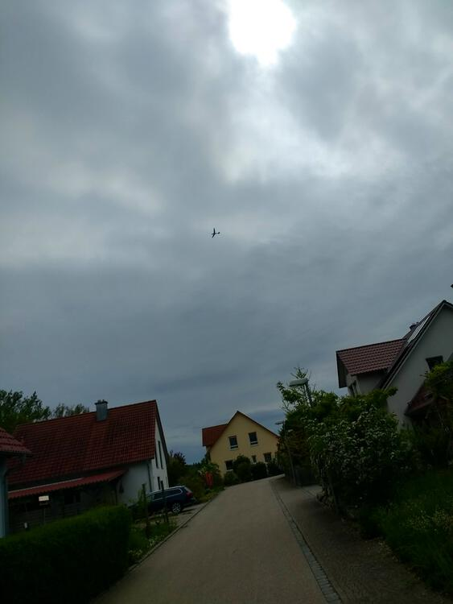
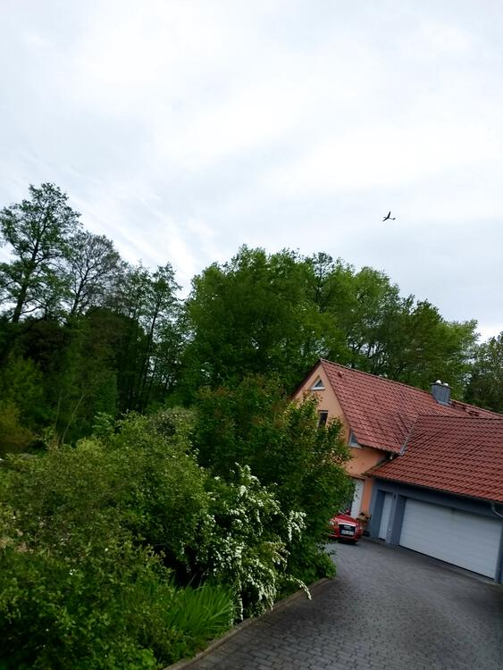
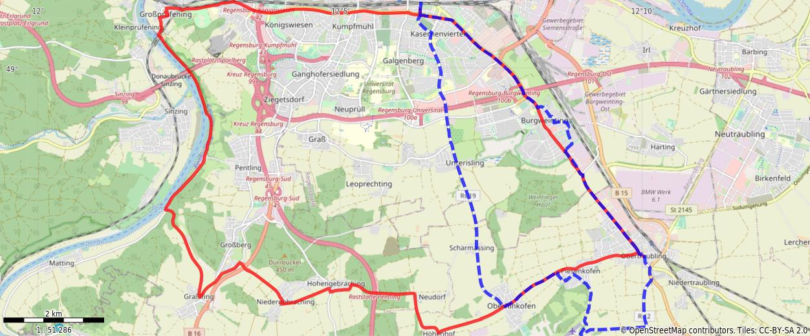

May 24, 2021
It was Pfingstmontag and I had the day off of work. I intended a nice long ride, but
So I cut it drastically short. But it was still a pretty good ride. Kinda got the impression that glider was following me though.




You might need to tap or click the map to make it bigger. The red solid route was my intention. The blue dashed route is my actual route.
Total Distance: 20.8 km
Time: 1:14